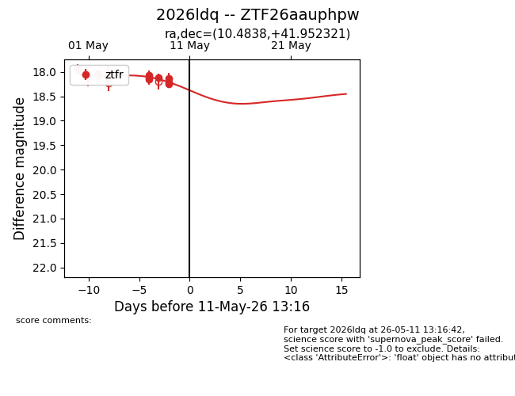
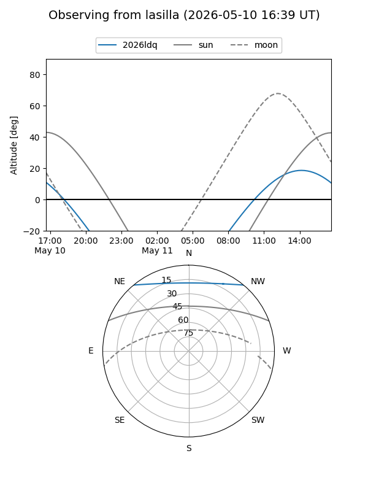
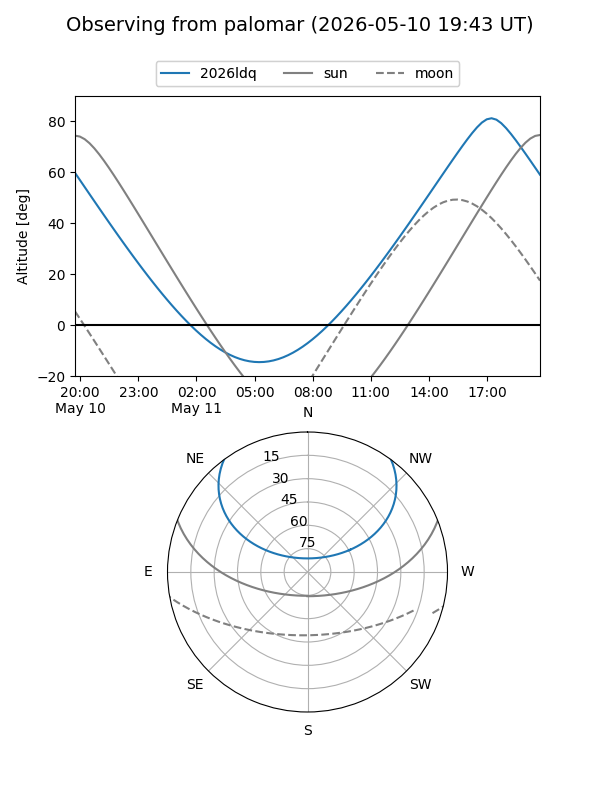
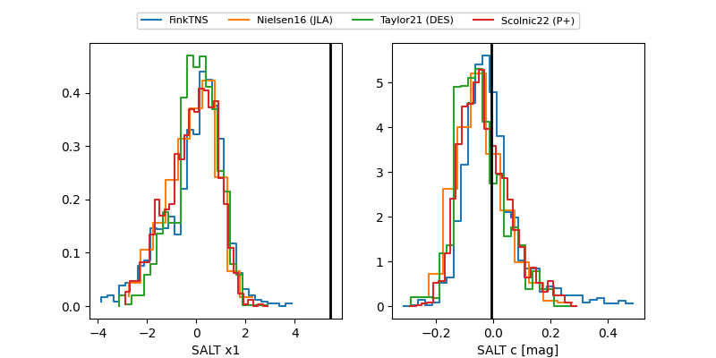

2026ldq
Target 2026ldq at 2026-05-11 13:20
Aliases and brokers:
FINK: link
Lasair: link
ALeRCE: link
TNS: link
YSE: link
alt names
ZTF26aauphpw (ztf,fink_ztf)
2026ldq (tns,yse)
Coordinates:
equatorial (ra, dec) = 10.4838,+41.95232
equatorial (HMS+DMS) = 00:41:56.11,+41:57:08.36
galactic (l, b) = (121.0411,-20.88454)
Flags:
Photometry:
last ztfr=18.13
13 ztfr detections
Lightcurve

Visibility


Additional plots
